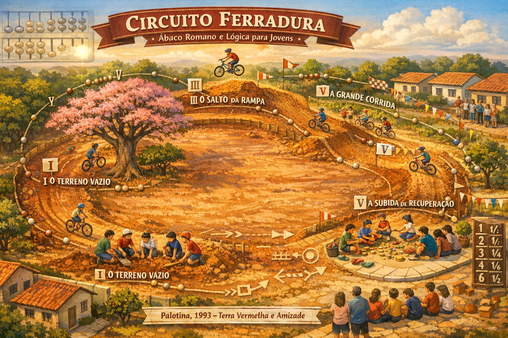

Circuito Ferradura
Ábaco Romano, Lógica e Programação Python
Inspirado na pista de terra vermelha de Palotina — 1993
Uma jornada de 40 horas pela lógica, pelo ábaco romano e pela programação Python — contada através das curvas, rampas e terra vermelha de Palotina, 1993.
O Circuito Ferradura foi desenvolvido pela Cara Core Informática para ensinar lógica e programação de forma lúdica e histórica. Em 6 fases progressivas, o aluno percorre o mesmo circuito de bicicleta que inspira o nome: uma pista em forma de ferradura, com largada, curvas, rampa, subida, reta final e chegada.
Entender cálculo romano com contas, ranhuras e o sistema bi-quinário — base de toda a lógica.
Do ábaco ao código: variáveis, funções, jogos, IA e segurança digital com Python puro.
Portfólio documentado, certificado oficial e roadmap de carreira ao cruzar a linha de chegada.
.exe)Cada fase é uma curva da pista. O circuito só termina quando você cruza a linha de chegada.

Variáveis, condicionais, loops e o Ábaco Romano em Python.
Pygame, coordenadas, eventos e o Pong da pista.
Minecraft Education, Pillow e animações GIF automáticas.
IA, Machine Learning e bots inteligentes na subida.
OAuth 2.0, OIDC, JWT e segurança digital aplicada.
Portfólio, GitHub, code review e certificação oficial.
A terra vermelha de Palotina espera. Seu ábaco está pronto. Pedale!
Iniciar Fase 1 Testar Conhecimentos